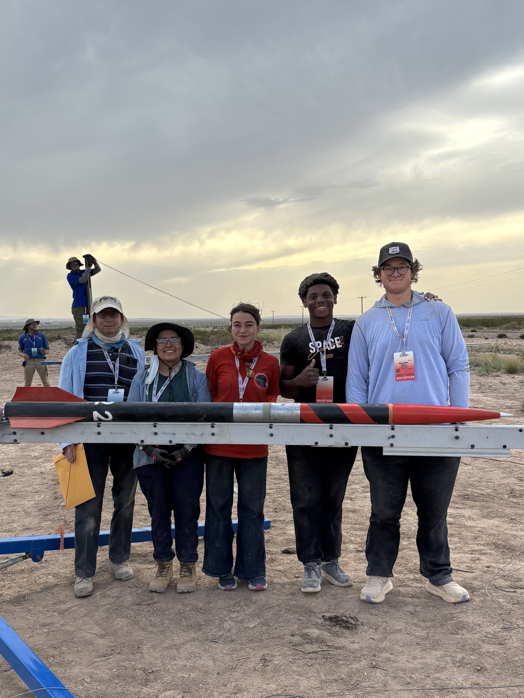
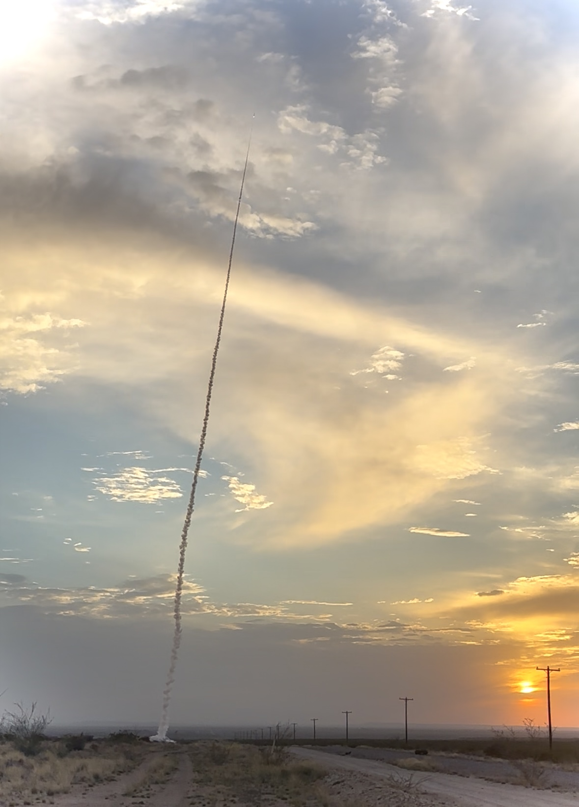

Rockets
I'm the Founder & President of the Grinnell Rocket Team. We design, build and launch high-power rockets - from the pink Princess that earned us Tripoli Level 1 to our current IREC 2026 entry aiming for 10,000 feet.
Princess · Our first certified flight

Pink, proud and legally certified.
Princess was our first fully team-designed high-power rocket - every thrust calculation, drag coefficient, fin flutter check and recovery timing done by us beforehand. And with a successful recovery! Earned Tripoli Level 1 certification on the first attempt, a nationally recognized credential for using high-class motors.
Flying Squirrel · IREC 2026
We flew. ~7,000 feet.
On June 18, 2026, the Grinnell Rocket Team launched the Flying Squirrel at the Intercollegiate Rocket Engineering Competition in Midland, Texas — our first appearance at the largest collegiate rocketry competition in the world. We designed the flight simulations, the structural calculations, the avionics wiring and the recovery system ourselves. Our targeted apogee was 10,000 feet; on the day, we reached approximately 7,000 feet.
We also flew a science payload that tests which vibration-isolation materials best protect sensitive electronics during flight — accelerometers, data and conclusions that will help in our future avionics designs. Recovery operations are still in progress; full flight data analysis will follow once we get the rocket back.
Launch day · Midland, TX
First day at IREC.
The Grinnell Rocket Team competing for the first time, under the 10K COTS category. None of this would have been possible without the support of Grinnell College. Special thanks to Maure Smith-Benanti, JC Lopez, and our president Anne Harris for backing this project, and to Craig and Monique Shore for their support on the hardware side. And, of course, to our mentor Lanie Cross — thank you for all the time invested in us and for teaching us so much. As we like to say: Now Pioneers in Flying.

Preparing to fly.
Setting up the altimeter, checking radio communications, assembling the rocket. A huge shoutout to my team members who have been doing their absolute best to make this dream possible: Harrison Elliott, Carmela Davidson, Eti-Abasi Laurel Edet, Shira Sheppard, and Stephany Ronquillo.


What a day.
The Grinnell Rocket Team had a successful launch. Our first time at IREC and we had a blast. Thank you to all the organizers who provided us the chance to show our capabilities — the Experimental Sounding Rocket Association — and, of course, to our rocketry friends at Cyclone Rocketry for helping us during our launch. We are now Pioneers in Flying.
Team & presence


Wind tunnel · Our first build

NASA Glenn-inspired wind tunnel
The Grinnell Rocket Team's first capital project, built with faculty advisor Prof. Tjossem and inspired by the NASA Glenn Research Center design. It's scientific equipment we designed from scratch and validated ourselves! It's also how we ignited ourselves (haha get it) to take on everything bigger that came after.
Publications & outreach
Published articles on rocket propulsion and related physics topics at Jovens Cientistas Brasil, including a deep technical piece on hybrid rockets and solid fuel. See the Research page for the full list. Also run K-12 outreach workshops at Grinnell High School and Middle School, teaching younger students how rockets actually work.